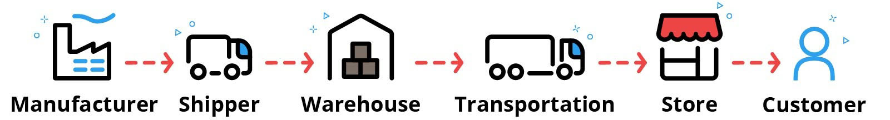
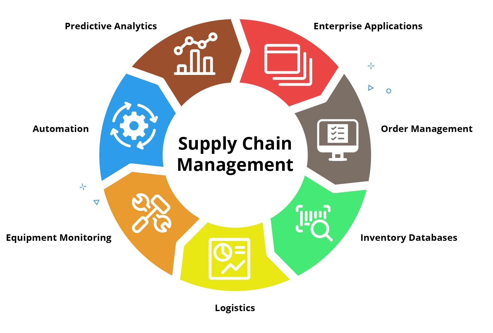
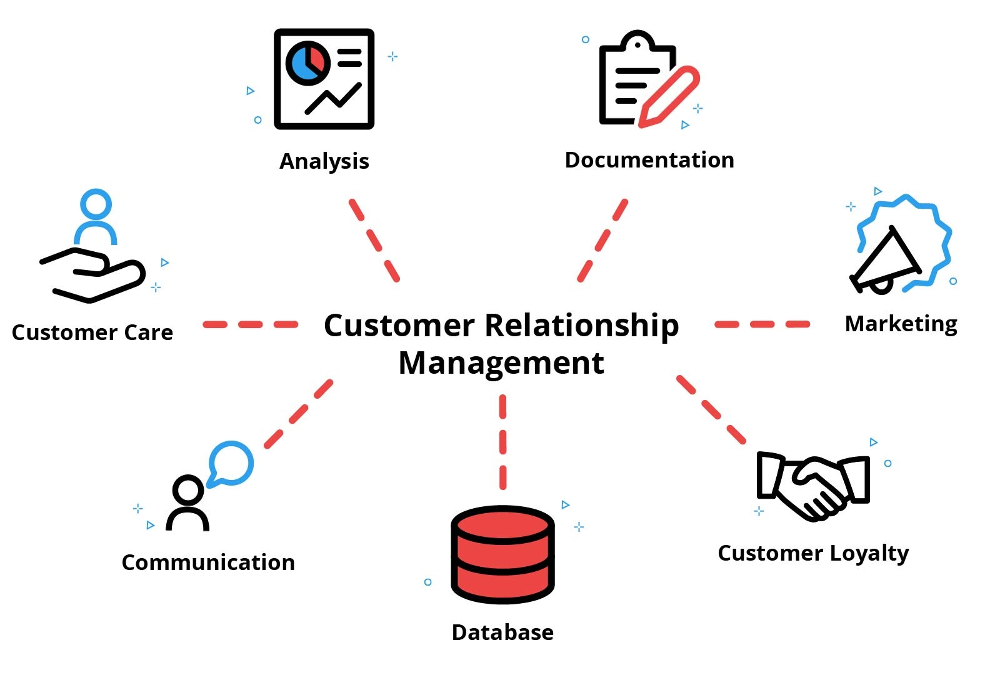
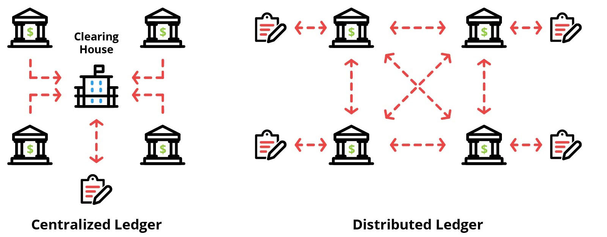
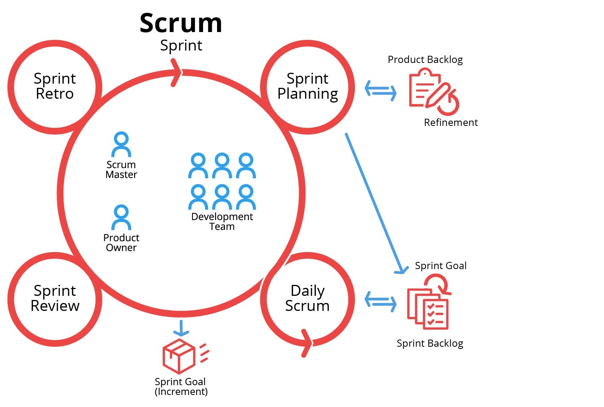
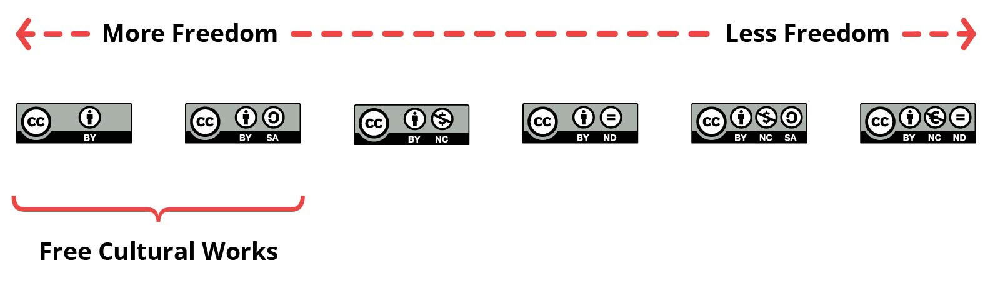

CTEC-101 wk 13 Information Systems
9.2 Intro to Business Systems
Information System- A combination of technology, people, and procedures used to organize, analyze, and store data.
Information System Types- The various forms of information systems including transaction processing, management, and expert systems.
Artificial Intelligence- An area of computer science that focuses on intelligent machines.
Supply Chain- The flow of goods and services from the producer to the consumer.
Customer Relationship Management (CRM)- Software that organizes notes, activities, and metrics into one working system that can help a business in many stages of the client-business relationship including client acquisition, client support, and client retention.
Cryptocurrency- A recent trend which is completely internet-based and uses cryptographical functions to conduct financial transactions.
Blockchain- A recordkeeping technology that was originally developed for Bitcoin. It consists of two parts: a piece of digital information and a public database. So, a blockchain is group of digital blocks of information that are stored in a public, decentralized database.
9.2.1 Intro to Information Systems
a System is a set of connected parts and procedures that accomplish a task.
Technology
- Hardware - physical devices
- Software - set of programs and instructions. Allows Hardware to Operate
- Data - collections of information and 'Facts'. Use Hardware and Software to manipulate data
The People (Programers, Database Admins, System Analysts, Security Specialists, etc...) that allow the business to run
the Last part are the Procedures the sequence of step or policies taken to reach a certain goal
Procedures are to People as Software are to Computers
Types of Information Systems
- Transaction Processing Systems (TPS)- process, record, store, modify, and cancel transactions. IBM created the first servers.
- Management Information Systems-
- Decision Support
- Expert Systems
9.2.3 Information Systems Facts
Technology- In an information system, technology can be broken down into three basic parts: hardware, software, and data. Hardware includes the things that you can physically touch, like computers, keyboards, storage devices, or tablets. Software is the computer programs that provide instructions to hardware telling it what to do. Data are information that are collected and stored in a system. These can be numbers, words, pictures, or sounds.
People- Information systems can't work without the human resources and talent we can find in programmers, database administrators, system analysts, security specialists, and many more. People use the information system to analyze data and make sound decisions for the organization.
Procedures- A procedure is a sequence of steps or policies taken to reach an ultimate goal. One way to think about it is to say procedures are to people what software is to hardware. Procedures tell people what to do and how to react in certain situations.
Transaction Processing: Business transactions include things like airline reservations, bank withdrawals and deposits, credit card payments, and online purchases. A transaction processing system, or TPS, is designed to record, process, store, modify, and cancel these types of transactions. A TPS typically integrates hardware and software technology that can facilitate transactions rapidly, maintain continuous availability, prevent data corruption, and allow users to cancel or correct transactional data. These systems need highly secure and scalable databases, as well as reliable backup procedures. Some of the earliest transaction processing systems were created by IBM. IBM mainframe servers continue to be used for businesses that need to process high volumes of transactions. Other systems use specialized transaction servers within a distributed computing environment.
Management: Management information systems provide businesses with the tools they need to organize, maintain, and evaluate company resources and other information. MIS tools include enterprise resource planning, or ERP, solutions, which integrate business operations and manage the flow of data between various departments.
Another MIS example is a customer relationship management, or CRM, system. These systems help organizations store and analyze relevant customer data, including tracking phone calls, retaining customers, and making the sales process more efficient.
-Large organizations often maintain their intellectual property within a content management system, which makes it easier to manage and maintain digital resources, such as text, images, and other media files.
-A decision support system, or DSS, is another specific type of management information system. While there is no substitute for human judgment in business decisions, a DSS can gather information and resources to help business leaders analyze markets, improve sales procedures, and expand their services. These systems provide statistical probabilities and data models that can support executives in predicting the results of different scenarios.
Expert Systems: Expert systems go beyond decision support systems in providing more direct recommendations for business leaders. Artificial intelligence is used heavily in these systems, which are designed to solve complex problems in a specific domain. For example, expert systems have been developed to analyze the lubricating fluid used during oil drilling and to help doctors diagnose diseases. These systems are programmed as a complex web of conditional IF…THEN statements.
A more recent AI technology built on neural networks is designed to closely mimic the physical connections of the human brain. Sometimes called deep learning, neural networks are better than traditional expert systems in accepting multiple inputs and recognizing patterns in raw data.
9.2.4 AI
- Robotics
- Natural Language Tech
- Neural Networks
- Big Data / Data Analysis Algorithms
9.2.5 Artificial Intelligence Facts
Artificial Intelligence- An area of computer science that focuses on intelligent machines. AI has already been implemented in various technologies ranging from computer games and simple voice recognition to advanced robotics and expert systems.
Technological Singularity- A hypothetical point in the future when artificial intelligence will surpass human intelligence, triggering an explosion in technology advancement that could threaten the human race. Scientists disagree on whether the technological singularity could ever be achieved.
Robotics- The field of robotics includes self-driving cars and autonomous drones that have the potential to be safer and more efficient than their human-operated counterparts. Artificial intelligence enters the picture when cars, drones, and other robots are programmed to learn from their mistakes without direct human intervention.
Natural Language Processing- Natural language processing includes speech recognition and translation into different languages, such as English to Spanish. After converting speech into text, AI technology can be used to process the meaning of the text and carry on a basic conversation. Computer programs called chatbots can resolve common customer service concerns quickly and efficiently. Chatbots become more effective as they add new customer interactions to their knowledge base.
Gaming- Scientific research in artificial intelligence has been applied to video games since the mid-twentieth century. In the early years, AI development was focused on how to beat human players. More recently, AI has been applied to enhance players' gaming experiences. AI elements in gaming include complex machine learning systems and more believable visuals that capture natural human emotion.
Expert Systems- Artificial intelligence is used heavily in expert systems, which are programs designed to solve complex problems in a specific domain. For example, expert systems have been developed to analyze the lubricating fluid used during oil drilling and to help doctors diagnose diseases. These systems are programmed as a complex web of conditional IF...THEN statements.
Neural Networks- A more recent AI technology built on neural networks is designed to closely mimic the physical connections of the human brain. Sometimes called deep learning, neural networks are better than traditional expert systems in accepting multiple inputs and recognizing patterns in raw data.
Big Data Analytics- Data mining experts use AI in machine learning algorithms that discover patterns in vast amounts of data collected from Internet searches, social media posts, customer transactions, and weather sensors. These patterns can help businesses better understand their customers and help data scientists identify potential threats.
9.2.6 Supply Chain Management
the flow of goods from manufacturer to consumer. In the 'Traditional Supply Chain' the main goal is to increase efficiency and reduce costs. A 'Modern Supply Chain' is more about building brand loyalty.

Modern Supply chains are agile - they can adapt to the changing needs of the market
Modern Supply chains are more about building brand loyalty

Order Management
Orders can be created and tracked in a variety of ways with information systems, including in a physical location or over the phone or internet. Each order can be assigned a number, and the customer may be offered the chance to check on the order's status while it's in transit. Problems with an order can be easily referred back to the company, who can access all the pertinent information through the system. This leads to better communication with customers and a deeper sense of trust.
Inventory Databases
Information systems are an integral part of modern inventory management. Goods can now be given barcodes or other scannable symbols so that they can be entered into large inventory databases. When a customer purchases a product, the item is scanned and automatically deducted from the inventory. The system can automatically notify those in charge when a product is running low. Sometimes, the restocking process itself is automated so that new products are shipped as soon as they drop below a certain threshold.
Before this technology, inventory had to be taken by hand. The process took a lot more time and was prone to human error.
Equipment Monitoring
Information systems can also help machinery run more efficiently. In a traditional supply chain, you would have to wait until a machine broke down before you fixed it. With current technologies, systems can predict when certain machines will need to be repaired and preventative measures can be taken. This means the entire operation will run more smoothly because these concerns are constantly monitored.
Predictive Analytics
Information systems are also used to predict trends in customer demand so that supply is created to better match these demands. This prevents overstocking of any given product and reduces warehouse storage space.
Automation
Information systems can automatically do many jobs that were once done by human employees. This frees up employees to help the business in more meaningful ways, such as providing leadership and interacting with customers.
9.2.7 Customer Relationship Management
CRM helps in all stages of 'client-business': Client Acquisition, Client Support, and Client Retention.
- Integrating Systems - organizes notes, activities, and metrics in one working system. Create a 'customer-by-customer' approach instead of a 'one-size-fits-all' approach.
- Building Relationships with Customers
- Finding Potential Customers - generate leads
- Following Up with Current Customers - track spending habits and contact customers that haven't purchased recently
- Resolving Problems with Current Customers - opening digital tickets so teams can monitor progress on issues for customers
- Analyzing Data Trends for Current Customers - helps to order based on customers previous purchases and what will be upcoming

9.2.8 Cryptocurrency
currency is anything exchanged for goods and services. Cryptocurrency is internet based and uses 'cryptographical functions to conduct financial transactions'.
'Crypto' = data encryption; 'currency' is a medium of exchange.
Cryptocurrency operates using 'Blockchain' technology that make it 'decentralized, immutable, and transparent'.
How does it Work?
works like digital money that uses 'data encryption' to keep transactions secure. Cryptocurrency can be transferred from 1 persons account to another.
Cryptocurrency is a digital currency that is NOT controlled by any single 'Centralized' entity; it is decentralized.

What is a Blockchain?
consists of 2 parts the 'Block' = a piece of digital information; and the 'Chain' = a public database.
the 'Blockchain' are secure digital blocks of information stored in a public, decentralized database.
each block has a 'Hash' identifier that is unique to the block. Blocks also contain date, time, amount, and parties involved in the transaction.
Blocks are always added to the end of the blockchain in the order they were created. Once a block is added to the end of the chain,
it's very difficult to go back and change the data that's been stored. If you change anything about a block,
the hash changes so you can see that the block has been tampered with. This grants an extra layer of security.
9.3 Data Analysis
9.3.1 Data and Information Assets
Business value about data and information assets - to protect IP businesses apply for Patents and Trademarks
the relationship between data and information assets. the process of turning data points into useful information is called 'Data Analytics'.
Data Analytics 1st step: collect raw data; if customer uses loyalty card the store can keep up with customer buying habit over time
2nd step: Analysts use statistical tools and formulas to look for trends, patterns, and correlations.
3rd step: Use that data from the analysis to make meaningful decisions.
9.3.2 Data and Information Facts
Data and Information- Businesses store data about customers, manufacturing processes, employees, etc. Businesses also own intellectual property such as innovative product designs, custom software applications, educational material, market analyses, etc. Data and information is a valuable corporate asset.
Data analytics- The process of turning data points into useful information is called data analytics. The first step of the analytics process is to collect raw data. Let's use a grocery store as an example. The store keeps track of how many customers make purchases, what they're buying, how much they're spending, and what time they're shopping. If the customers use a loyalty card, the store can keep track of each individual shopper's buying habits over time.
Once raw data has been collected, analysts use statistical tools and formulas to look for trends and patterns. This is called data correlation and this stage of analysis is considered the information layer. Machine learning systems and artificial intelligence (AI) are very helpful in the data correlation process.
For example, statistical software tools found that grocery store customers who buy ice cream are more likely to buy bananas than customers who don't. This type of information is typically presented to business executives through meaningful reporting which can include search features, charts, and graphs.
The last step of the analytics process is to use the information generated by the analysis to inform meaningful decisions. Because customers who buy ice cream are likely to pick up bananas, many grocery stores keep a small display of bananas near the frozen foods.
Data-driven business decisions- Organizations use data analytics to make informed business operation decisions (data-driven business decisions). Of course, encouraging customers to impulse-buy bananas is only one way companies use their data assets.
By analyzing manufacturing processes, warehouse layouts, and delivery networks, companies can find ways to streamline production and use their resources more efficiently. Sales and marketing teams use data analysis to identify potential markets, monitor shifting demands, and create effective advertising.
As you consider how data can help in making good business decisions, consider the following.
-Capture and collection - Consider how data will be captured and collected. This could be from varying sources, such as web server log files or tracking systems used to gathered data with scanning sensors. Once captured, you must store the data.
--Many businesses use relational databases for this purpose or other semi-structured data locations.
--Although semi-structured data does not reside in a relational database, the data have organizational properties that make analysis easier.
-Correlation - Establishing correlation in data enables an organization to make better business decisions. (This kind of correlation is often made using special tools that use machine learning and AI.) For example:
--Did customers who bought blouses also buy skirts?
--Perhaps there is a correlation between the type of content on a website and how often someone bought the item being advertised (colors, layout, images, etc).
-Reporting - Captured data or correlations statics are helpful in making better business decisions only if it can be presented in a way that makes sense to those making the decisions. Consider:
--One advantage of using databases, is the ability to query the data for specific information.
--Once gathered, it is important that the tools present the data in a way that can be easily interpreted, such as using graphs and charts.
Data Value
Data Driven Business Decisions
9.3.3 Microsoft Excel Chart Types
best practices for using a chart: -- Independent Distinct Values = Bar Graph;
Change over time = Line Graph
Relative Percentages = Pie Chart
9.3.4 Use Microsoft Excel Tables to Analyze Data
9.3.6 Microsoft Excel to Analyze Data
9.3.8 Use Microsoft Access Report to Analyze Data
reports are formatted, easy to read summary of queries
9.4 Designing and Implementing Systems
Systems Analysis and Design- The study and design of a system, accomplished by examining its components and their interactions.
System Development Life Cycle (SDLC)- A methodology or framework that defines steps and tasks for developing and maintaining information systems.
Waterfall Model- A development model that breaks down project activities into a series of sequential or linear phases, each phase depending on the deliverables from the previous phase.
Iterative Design- A development model that involves designing, implementing, and testing smaller pieces of the overall project, then cycling back and doing more analysis and design.
Planning Phase- The SDLC phase that involves gathering information about the technology and software needs of an organization, deciding which options are most feasible, and setting timelines and deliverables for the entire project.
Analysis Phase- The SDLC phase that involves studying existing information systems that are already in place and the requirements for new information systems.
Design Phase- The SDLC phase that involves reviewing the system requirements document from the analysis phase and producing detailed specifications that cover all aspects of the system.
Implementation Phase- The SDLC phase that involves purchasing and installing new hardware and software, integrating the various system components, and testing the operation of the new system.
Maintenance Phase- The SDLC phase that involves monitoring and evaluating the new information system.
Project Management- The practice of initiating, planning, executing, controlling, and closing the work of a team to achieve specific goals and meet specific success criteria at the specified time.
Systems Integration- An activity that involves integrating various computing systems and software applications to function together as a whole.
Agile- A project management process that divides a large or complex project into smaller, more manageable projects that can be completed as part of an incremental or iterative process.
Needs Assessment- A systematic process for determining and addressing needs, or "gaps" between current conditions and desired conditions, or "wants".
Risk Management- The identification, evaluation, and prioritization of risks followed by activities that minimize, monitor, and control the impact of the risk.
9.4.1 System Analysis and Design
Information Systems have 3 parts: People, Procedures, and Technology.
to design work with end users - as an organization involves and changes it will need to be updated.
SDLC - System Development Life Cycle -- also the Software Development Life Cycle
- Planning - gathering information and deciding which options are most feasible. set timelines, decide who make decisions
- Analysis - looks at existing systems and decide if they are adequate or if they need to be updated
- Design - takes the system requirement from Analysis and creates detailed specifics
- Implementation - purchase and install new hardware and software components - test operations. Employee Training
- Maintenance - monitor and evaluate systems. maintain security to keep from data breaches
Most new projects are developed using 'Iterative' design - small parts of the project are tested, reworked and redesigned
9.4.2 System Design Facts
System Development Life Cycle- The methodology used by systems analysts is called the System Development Life Cycle, or SDLC. Since software applications are typically central to an organization's system, SDLC can also stand for Software Development Life Cycle. Traditionally, the SDLC is divided into a series of phases, from preliminary analysis and design to implementation and maintenance.
Waterfall Model- Historically, the waterfall model has been the most widely used development model. It divides the SDLC into a series of sequential or linear phases, from preliminary analysis and design to implementation and maintenance.
Iterative Design- Today, most information systems are developed using an iterative process that involves designing, implementing, and testing smaller pieces of the overall project, then cycling back and doing more analysis and design. For example, rather than redesigning the entire system at once, an organization might start by implementing a single enterprise application, such as new sales and marketing software. This process continues until the entire system is in place. The Agile method is one of the most popular iterative models, especially in the software development industry.
Planning Phase- The planning phase involves gathering information about the technology and software needs of an organization, deciding which options are most feasible, and setting timelines and deliverables for the entire project. In this phase, the organization decides who will supervise the project and who will be part of the design and development team. The final planning document details the goals of the information system in responding to new business opportunities and making operations more efficient.
Analysis Phase- In the analysis phase, the project team takes a close look at any existing information systems that are already in place. For example, if the organization currently uses a transaction processing system to track customer orders, the team will determine if this system is adequate or needs to be upgraded. Does the organization need a better support system to help business leaders make more informed decisions? Do product developers have the processes and tools they need to work efficiently? The requirements for the new information system will bridge the gap between the existing system and the goals of the new one.
Design Phase- The design phase takes the system requirements document from the analysis phase and produces detailed specifications that cover all aspects of the system. These specifications account for security risks and include computer system requirements, network configuration, cloud hosting services, database design, and application software solutions. In some cases, the design phase might include a series of prototypes that can be tested by potential users of the new system.
Implementation Phase- In the implementation phase, developers and administrators purchase and install new hardware and software, integrate the various system components, and test the operation of the new system. For example, developers would need to ensure that a new ecommerce application operates seamlessly with an organization's existing inventory control and distribution systems. After the system is thoroughly tested, employees may need to receive training. Before retiring the old system, the project team might decide to keep it running in parallel with the new system for a while. Another way of easing the transition to a new system is to implement it with a small pilot group first.
Maintenance Phase- In the maintenance phase, the new system needs to be monitored and evaluated. When the project team identifies problems, they might need to cycle back to the earlier planning and analysis phases to improve the system. For example, if a data breach is discovered, the organization must determine the cause of the breach and implement a plan to avoid future vulnerabilities.
9.4.3 Project Management Facts
Systems Integration- One of the biggest challenges for IT project managers is to integrate various computing systems and software applications so they can function together as a whole. Technology changes need to be coordinated within the enterprise network, which includes data centers and storage facilities, virtual and remote assets, and wireless and wired access controls. Organizations that have not fully integrated different subsystems are often much less efficient and secure.
Agile Methodologies- Because IT projects are often large and complex, it usually makes sense to divide them into smaller, more manageable projects that can be completed as part of an incremental or iterative process. The Agile method is the most popular model used today. A project that follows this methodology is called a scrum, which is broken up and prioritized into functional sprints. A sprint includes product features than can be released one at a time or together with several other sprints. Agile development teams typically meet daily to review progress and coordinate the efforts of team members. After each sprint, scrum teams hold a retrospective meeting to adapt to changing requirements and adjust project goals.
Needs Assessment- Before beginning a project, managers need to perform a thorough needs assessment. This includes who will be using the new computer system or software, which subsystems need to be integrated with proposed changes, and when the project needs to be completed.
Communicating with Stakeholders- Project managers know the importance of communicating with everyone who will be impacted by a technology change. Project stakeholders include managers and executives who authorize funds as well as staff members who will be responsible for supporting the systems after they've been implemented. Since most projects encounter unexpected challenges, such as the loss of key team members or platform incompatibilities, project managers need to maintain open communication with stakeholders throughout the project life cycle.
Risk Management- Organizations typically make technology changes to improve business operations. However, most changes also come with possible risks. An important part of IT project management is identifying and managing these risks. For example, allocating additional funding to a project may strain another project's budget. Adding a new member to a team may negatively impact the team's effectiveness as training the new member will cause stress and consume time. Skilled project managers embrace risks they believe are worth taking and then implement a plan for mitigating them. Many risks can be avoided by making sure project requirements are clear and comprehensive before moving forward on the project.
Controlling Costs- Completing a project within the approved budget is often the most important indicator of project success. Cost control involves accurate cost forecasting, detailed record-keeping, and regular budget reviews. Cost management software can be used to ensure projects stay within budget.
Meeting Project Deadlines- The first and most obvious step to meeting project deadlines is to include accurate time estimates during the planning phase. Deadlines that are based on reasonable task duration estimates need to be communicated clearly to team members. Project managers are responsible for helping development teams track their progress, improve performance, and request additional resources as needed. Resource management software such as Trello, Jira, and Workfront can help teams divide up big projects into smaller, manageable tasks. These tasks can be assigned to individuals along with due dates and any other pertinent information to get the task done.
Project Evaluation and Assessment- Good project managers learn from both their successes and failures. They gather relevant data throughout the project life cycle to determine where things went wrong and how the development process can be improved. They actively seek input from team members both during and after the completion of the project.
9.4.4 Agile Methodology
project development style that has proven effective for many teams. Promotes constant inspection, reflection, and adaptation.

Iterative Development
One of the first terms that's good to know is iterative development. An iteration is a cycle that's repeated over and over. When developing a product, the hope is that each iteration will make the product better through team collaboration.
Scrum
Another term that's often used with the Agile development process is Scrum. Scrum is an Agile framework, which in this context is just a certain collection of practices that must be consistently followed. The goal of using Scrum is to keep the overhead for the process as low as possible in order to maximize development time.
Scrum Master
During the Scrum process, each day starts with a meeting that's led by the project manager, who's known as the Scrum Master. It's the Scrum Master's job to schedule meetings, run them, and make sure that everyone is being as productive as possible. During a Scrum meeting, people usually report on what they've already accomplished and what they plan on doing that day.
Sprints
The Scrum process is built around Sprints. A Sprint is a time period where the Scrum team works together on a specific goal. These can as short (a week) or long (up to several weeks) depending on the nature of the goal. A general rule is that the more complex the task, the shorter the sprint should be so that the team can collaborate more often. That way they can keep errors from getting out of control
In a Scrum process there are three artifacts, or things that are created. These are the Product Backlog, the Sprint Backlog, and the Increment.
Product Backlog
The Product Backlog is a central list of work that needs to be done. It's a dynamic list that constantly changes to include new features, enhancements, and bug fixes that need to take priority.
Sprint Backlog
The Sprint Backlog is a list of things from the Product Backlog that have been prioritized to be worked on in the next Sprint Cycle. The team meets together before a Sprint starts and decides what belongs on the list.
Increment
The Increment is also known as the Sprint Goal. This is the finalized end product that should be completed by the end of the Sprint.
Product Owner
The Product Owner is the person on an Agile team who gets to decide what goes on the Sprint Backlog and when a task is sufficiently complete. He or she facilitates the quality control of the product to make sure the team is meeting the goals they set out to accomplish.
9.5 Intellectual Property
Copyright- Protections granted by the federal government to creators, writers, and inventors regarding rights to reproduce, display, make derivatives of, sell, rent, or lend a work.
Intellectual Property- Anything that is owned by a copyright holder.
Piracy- The crime of using someone else's intellectual property in a way that should be reserved for the copyright holder.
Fair Use- An exception to copyright law that allows short excerpts of a copyrighted work to be used for purposes that benefit the public.
Public Domain- Works whose copyrights have expired and are free for anyone to reproduce, display, and make derivatives.
Proprietary Software Any software where the publisher retains intellectual property rights to the source code.
Open-source Software- Software where anyone can inspect, enhance, and modify the source code.
Patent- A license given by a government that provides inventors a temporary monopoly on their invention.
Trademark- Any word, picture, or symbol that's used to distinguish a good from other similar goods.
Privacy Expectation- A reasonable belief that personal information collected by an information system is controlled and protected, not shared or used beyond its original intent.
Creative Commons- A non-profit organization that gives content creators free licenses that allow them to share their work in exactly the way they want to.
Digital Millennium Copyright Act (DMCA)- A law that was created to protect artists of all types (musical, visual, literary, etc.) from having their work pirated through technology.
9.5.1 Copyright and Intellectual Property
if you create a photo, image art, or novel it Belongs to you. as a creator you have rights - these are copyrights.
if you post something to social media (ie: facebook) you have agreed to their terms and they have they right to use your copyrighted material.
using copyrighted material without permission is piracy.
Fair Use - is not a right, but a defensible position.
Licensed - purchasing the right to use copyrighted work to sell for profit.
Proprietary - the owner of the copyright still has all the rights and you only have the right to use the software or work.
9.5.2 Patents and Trademarks
protect IPs - vary different from country to country. - we discuss the american patents.
'TM' is a assertion of Trademark; the 'R' in a circle is a Registered Trademark
9.5.3 Intellectual Property Facts
Copyright- Protections granted by the federal government to creators, writers, and inventors. Copyright includes the rights to reproduce, display, make derivatives, sell, rent, or lend a work.
-Copyright is automatically given to creators of works; no application is necessary. Copyrights usually have a time limitation that they are enforceable. For example, in the United State, 14 years was the default, but could sometimes be extended. Other countries have varying lengths.
Intellectual property- Anything that is owned by a copyright holder is called intellectual property. Some common examples of intellectual property are books, paintings, songs, poems, movies, and inventions.
Piracy- Piracy is the crime of using somebody else's intellectual property in a way that should be reserved for the copyright holder. This can include downloading a movie without paying, making photocopies of a book, or selling a copy of a CD. Piracy is punishable by jail time and fines.
Fair use- Fair use is an exception to copyright law that allows short excerpts of a copyrighted work to be used for purposes that benefit the public. Such uses include criticism, teaching, research, and news reporting. However, it should be noted that fair use is not a right; it's a legally defensible position.
Public domain- Works whose copyrights have expired enter the public domain. Public domain works are free for anyone to reproduce, display, and make derivatives.
Proprietary software- Any software the publisher retains intellectual property rights to the source code. Most software you buy is proprietary. Generally, the end user has the right to use the software but does not have the right to make and distribute unauthorized copies.
Open-source software- Software anyone can inspect, enhance, and modify the source code. Open-source software is often free and often has several optional third-party add-ons to enhance the product. Common open-source software examples are GIMP and the Linux operating system.
Patent- A license given by a government that provides inventors a temporary monopoly or protection on an invention. For example, patent holders can prevent other people from making, selling, or using their patented invention for a certain amount of time. In exchange, the patent holder must provide the public with clear and detailed disclosure of how the invention works.
-The patent system encourages innovation by guaranteeing the rights of inventors to make money from their inventions for a few years. At the same time, making the details of an invention public can inspire further innovation.
-To get a patent, an inventor must submit (or register) an application to the federal patent office. The application is reviewed by a panel of relevant experts and judges. An inventor should also register a patent with other countries for further protection.
Trademark- A trademark is any word, picture, or symbol that's used to distinguish a good from other similar goods. An example is the name of a company or the logo used by a company. Unlike copyright and patents, which are intended to protect creators, trademarks exist to protect consumers. Trademarks make it easy for people to know who makes a product. Trademarks can also help each brand establish a standard of quality that consumers can expect.
-There are a wide variety of symbols that can serve as trademarks. These include words, phrases, logos, illustrations, colors, and even sounds. Anything that distinguishes one brand from another can be used as a trademark.
-There are two symbols used to designate a trademark. The TM simply means the company is asserting that it has a trademark. The R in a circle means the trademark has been formally registered with the US Patent and Trademark office.
-Trademark infringement is the act of trying to mislead customers by pretending to be another brand. Take Dr. Pepper for example. When you get to the soda aisle, you'll likely encounter a few off-brand sodas, like Dr. Lightning, Dr. J, or Dr. Salt. These are all fine because it's easy to distinguish them from the original. However, if a soda company used a similar name like Dr. Popper, the company could be sued for trademark infringement.
Digital goods- Digital goods, also known as digital products, are intangible products that exist only in a digital form. This means the product is available to customers only as binary computer data, such as e-books in PDF format, Wikipedia articles, music, and Netflix videos.
Since the content is in a digital form, it is easier to steal and copy. To help protect your company against illegal use of digital products, you can use access control technologies to restrict the use of your digital data.
These types of controls are known as digital rights management (DRM) or technological protection measures (TPM). DRM and TPM help you control the use, modification, and distribution of your copyrighted digital data.
As part of these features, companies often try to force users to pay for the use of their digital products. Technologies used to help protect digital data include such things as, using product keys, limited installation activation, encryption, anti-tampering, etc.
9.5.4 Creative Commons
Attribution- A person in a circle with the letters BY beneath. Anyone who uses the licensed work must give credit to the original creator. All Creative Commons licenses must include the Attribution right.
No Derivative Works- Equals sign in a circle with the letters ND beneath. Other people may copy or distribute the original work, but they may not make changes to it. Only verbatim copies of the work are allowed.
Share Alike- A looped arrow in a circle with the letters SA beneath. Anyone who uses the work must distribute it under a license that's identical to the original. Since we don't want to distribute this course for free, we can't use any resources that include the Share Alike right.
Non-Commercial- A dollar sign crossed out in a circle with the letters NC beneath. Only the copyright holder is permitted to make money from the work. For example, you could make a t-shirt with a design that has this right, but you could not sell it.

"Squirrel" by Phil Fiddyment is licensed under CC BY 2.0
This citation is ideal because it contains:
- The title of the work with a link to the original source.
- The name of the author with a link to their profile page.
- The type of license with a link to the license deed
9.5.5 Digital Millennium Copyright Act
Law created to protect artists (musical, visual, literary, etc.) from piracy.
DMCA Protects the following kinds of media:
- Written Texts such as a blog
- Digital Images and Artwork
- Digital Music and other audio files
- Digital Videos
- Digital Software
Safe Harbor
9.6 Information System Careers
Project Manager- A detail-oriented professional who manages a team to get projects done in a timely manner and under budget.
Systems Analyst- Trusted professionals who consult with organizations to help them improve the effectiveness of their information systems.
Information Systems Manager- A manager in charge of integrating different technologies and systems within an organization including data security, company policies and procedures, and quality control when implementing new systems.
9.6.3 Facts
Information Systems Manager- An information systems manager is in charge of integrating different technologies and systems within an organization, including data security,
company policies and procedures such as disaster recovery and backup, and quality control when implementing new systems. IS managers are responsible for installing and maintaining
current hardware and software as well as planning for future technology needs. They recruit, hire, and supervise a team of IT professionals, coordinating and monitoring daily projects
and enforcing company standards. Candidates for these positions usually hold a bachelor's degree in computer or information science and often graduate degrees in business management or
information systems. Although a career in IS management requires a high level of education and experience, six figure median salaries provide a strong incentive to get into the field.
Project Manager- Project managers are responsible, detail-oriented professionals who know how to manage a team to get things done on time and under budget. A project manager
can have a wide range of duties, including monitoring project deadlines, adjusting plans and schedules when problems arise, assigning tasks to team members, and overseeing budgets
and timelines. Project managers can work in any IT field, in addition to other fields such as construction management and manufacturing engineering. Since project managers deal with
many people on different teams, they need great communication skills, which allow them to coordinate with customers, their own team members, and any other stakeholders involved in a project.
To get a job as a project manager in the IT world, you typically need at least a bachelor's degree in business or computer science. Many companies also prefer that candidates have the PMP or
Project Management Professional certification, along with certifications specifically designed for IT Service Management.
Systems Analyst- Systems analysts are trusted professionals who consult with organizations to help them improve the effectiveness of their information systems. They analyze and
assess the performance of existing systems to suggest how a business can operate more efficiently. By understanding the business needs of their clients, talking to users, and consulting
with management teams, systems analysts are in a good position to persuade business leaders to implement changes. They also produce specifications and provide user training for new or
modified systems. These responsibilities require strong analytical, interpersonal, and presentation skills. In addition to a degree in computer science, information systems, or a related field,
systems analysts need several years of experience working with business information systems and collaborating with engineering and development teams.